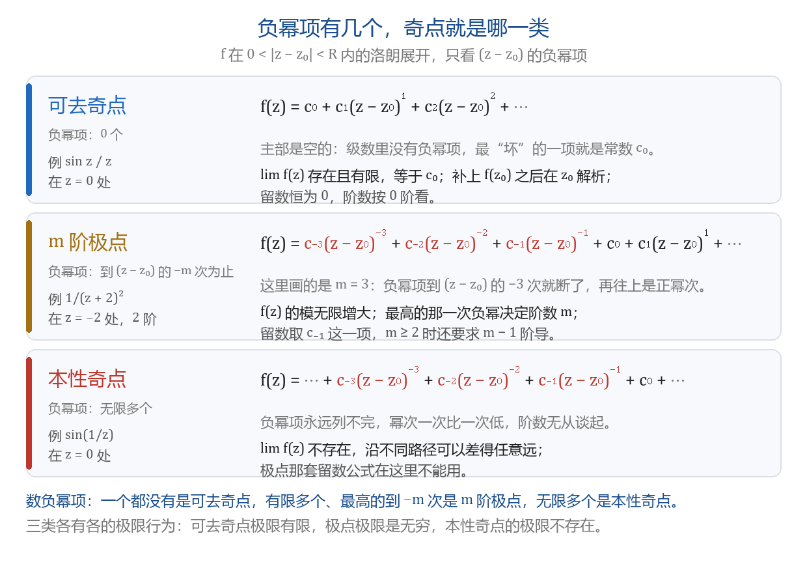
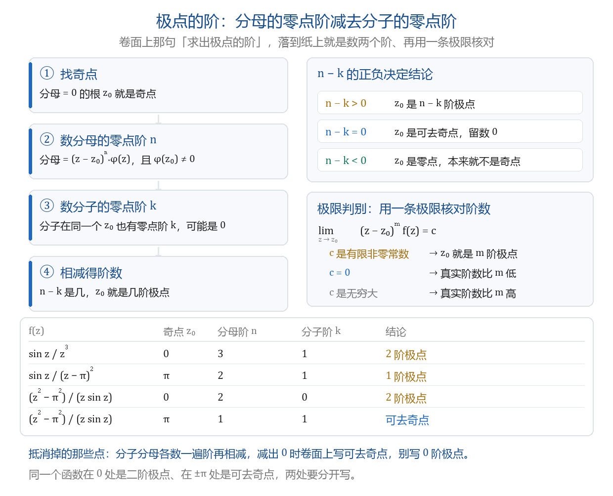

奇点分类：零点与极点
本节目标：能判定奇点类型与极点的阶，并写出零点阶。
卷面怎么考
本节的题面只有两种形状：问某个点是哪一类、几阶，问一个函数有哪些奇点、各是什么。
- 填空，3～4 分，只报个数。2024 年 B 卷：「函数 f(z)=\frac{z}{\sin z} 在 |z|<4 内有 ___ 个奇点。」参考答案填 3。
- 选择，3 分，四个选项在一阶极点、二阶或三阶极点、可去奇点、本性奇点里挑。合肥工大几套卷的选择第 5 题连着考这个形状：z=\pi 是 \frac{\sin z}{(z-\pi)^2} 的什么，z=0 是 \frac{(e^z-1)^2z^3}{\sin z^8} 的什么，z=\pi 是 \frac{z-\pi}{(\sin z)^3} 的什么，z=0 是 \frac{z\sin z^3}{\ln(1-z^4)} 的什么。
- 解答题，10 分，第一问固定是「求 f(z) 在有限复平面内的奇点和类型，求出极点的阶」，第二问拿这些点去算闭路积分。2024 年 A 卷的 \frac{z^2-\pi^2}{z\sin z}、2024 年 B 卷的 \frac{z+\cos z}{z(z-\pi)(z+\pi)}、2025 年 A 卷的 \frac{\sin z}{z^4-1} 都是这个形状。
本课只练两件事：认类型、数阶。留数公式怎么用留到下一课。
零点与零点的阶
极点的阶全靠零点阶数出来，所以先讲零点。
设 f 在 z_0 解析且 f(z_0)=0，称 z_0 是 f 的零点。若还能写成
其中 \varphi 在 z_0 解析，则称 z_0 是 f 的 m 阶零点。
阶数量的是零点趋零的快慢：一阶零点处函数近似于一次式，二阶零点近似于平方。数阶有三条等价的路，做题挑最快的一条。
| 数法 | 判据 | 例 |
|---|---|---|
| 看展开 | 泰勒展开里第一个不为零的项是 c_m(z-z_0)^m，下标 m 就是阶 | \sin z=z-\frac{z^3}{6}+\cdots，在 0 处一阶 |
| 逐个求导 | f(z_0)=f'(z_0)=\cdots=f^{(m-1)}(z_0)=0 且 f^{(m)}(z_0)\ne0 | 1-\cos z 在 0 处：值 0、一阶导为 0、二阶导为 1，二阶 |
| 看因式 | 因式分解里 (z-z_0) 这个因子的最高次幂 | z^2(z-\pi) 在 0 处二阶 |
三条判据在卷面上不需要都写，写清一条就够。
三类孤立奇点
f 在去心邻域 0<|z-z_0|<R 内解析时，z_0 叫 f 的孤立奇点。上一课的洛朗展开就在这个去心邻域里成立，负幂项（主要部分）有几项、最高到几次，把奇点分成三类。
- 可去奇点：主要部分一项都没有，展开是 c_0+c_1(z-z_0)+\cdots。此时 \lim_{z\to z_0}f(z)=c_0 存在且有限；把 f(z_0) 定义成 c_0，f 就在 z_0 解析，奇点被抹掉，所以叫可去。
- 极点：主要部分只有有限多项，最高的一项是 \frac{c_{-m}}{(z-z_0)^m}（c_{-m}\ne0，m\ge1），则称 z_0 是 m 阶极点，一阶极点也叫简单极点。此时 |f(z)|\to+\infty。
- 本性奇点：主要部分有无限多项。此时 \lim_{z\to z_0}f(z) 不存在：沿不同路径趋近 z_0，可以取到任意远的值。
| 类型 | 主要部分 | \lim_{z\to z_0}f(z) | 阶怎么写 | 留数 |
|---|---|---|---|---|
| 可去奇点 | 无负幂项 | 有限值 c_0 | 阶数按 0 看 | 0 |
| m 阶极点 | 最高到 (z-z_0)^{-m} 为止 | 无穷大 | 写清 m | c_{-1}，m\ge2 时要求 m-1 阶导 |
| 本性奇点 | 无限多项 | 不存在 | 无阶可写 | c_{-1}，只能从展开里读 |
留数那一列上一课已经交代过：它就是洛朗展开里 c_{-1} 这一项。

assets/img/gen/奇点分类-三类-洛朗负幂项-本机-01.py），许可：本项目自产）填空问「有几个奇点」时，可去奇点照样占名额。2024 年 B 卷 f(z)=\frac{z}{\sin z} 的答案是 3：分母在 |z|<4 内的零点是 0,\pm\pi，全算，0 处虽然可去也照算。定类型与数个数是两件事。
极点的阶怎么数
两条路：一条用来算，一条用来核。
按零点阶相减。 设 f(z)=\frac{g(z)}{h(z)}，g 在 z_0 有 k 阶零点、h 有 n 阶零点。则 n-k>0 时 z_0 是 f 的 n-k 阶极点，n-k=0 时可去，n-k<0 时 z_0 本身是 f 的零点。
用极限核。 z_0 是 m 阶极点，当且仅当
用法是试：乘上 (z-z_0)^m 之后极限是有限非零数，m 就是阶；极限是 0 说明阶数比 m 低，极限是无穷说明比 m 高。

assets/img/gen/极点阶-判定-分母阶减分子阶-本机-02.py），许可：本项目自产）两个卷面原题走一遍。
2022 年 A 卷第 7 题：f(z)=\frac{\cos z}{z^2(z^2-\pi^2)}，求有限复平面内的奇点。分母 z^2(z-\pi)(z+\pi) 中，0 是二阶零点，\pm\pi 各是一阶零点；分子 \cos z 在这三点分别取 1 与 -1，都不是零。于是 0 处 2-0=2，二阶极点；\pm\pi 处 1-0=1，各是一阶极点。参考答案就分两行写这两句，每行 1 分。
2025 年 A 卷第 8 题：f(z)=\frac{\sin z}{z^4-1}。z^4-1=(z-1)(z+1)(z-i)(z+i)，四个根各一阶；分子在这四点都不为零。四个都是一阶极点。
抵消之后阶数会变
分子在同一个点也带零点时，只看分母幂次会多算。下面六行都是抵消后阶数变了的形状，其中五行来自公开试卷。
| f(z) | 奇点 | 分母的零点阶 n | 分子的零点阶 k | 结论 |
|---|---|---|---|---|
| \frac{\sin z}{z^3} | 0 | 3 | 1 | 二阶极点 |
| \frac{\sin z}{(z-\pi)^2} | \pi | 2 | 1 | 一阶极点 |
| \frac{z-\pi}{(\sin z)^3} | \pi | 3 | 1 | 二阶极点 |
| \frac{(e^z-1)^2z^3}{\sin z^8} | 0 | 8 | 5 | 三阶极点 |
| \frac{z^2-\pi^2}{z\sin z} | 0 | 2 | 0 | 二阶极点 |
| \frac{z^2-\pi^2}{z\sin z} | \pi | 1 | 1 | 可去奇点 |
第一行就是最常被写错的那个：z^3 是三阶，指数函数里 \sin z 在 0 处一阶，3-1=2。展开核对一遍：\frac{\sin z}{z^3}=\frac1{z^2}-\frac16+\cdots，最高负幂是 -2 次，二阶极点。
第四行的分母是 \sin z^8，八阶零点：\sin z^8\sim z^8；分子 (e^z-1)^2z^3\sim z^2\cdot z^3=z^5，五阶零点，8-5=3。
第五、六行是 2024 年 A 卷的 10 分题。参考答案写：0 是分母的二阶零点，所以是二阶极点；\pm\pi 是分子分母的一阶零点，所以是可去奇点（卷面写作「可去极点」，指同一件事）；其余整数倍的 k\pi 是分母的一阶零点，各是一阶极点。
同一件事还换个说法考过：设 z_0 是 f 的一阶极点、g 的一阶零点，问 z_0 是 f^3g^2 的几阶。极点那一头是 3\times1=3 阶，零点那一头是 2\times1=2 阶，3-2=1，答一阶极点。
本性奇点别套公式
极点那套留数公式里有 (z-z_0)^m 和 m-1 阶导，m 是阶数；本性奇点没有阶，公式没有下手处。判本性只有一条：负幂项无限多。常见形状是 \sin\frac1z、e^{1/z}、\cos\frac1z 在 0 处，把 z 换成 \frac1z 一展开，负幂项就永远列不完。
反过来，题面里分子分母全是 z 的幂、指数、三角、对数的组合时，答案落在可去奇点与极点里，几乎不会是本性奇点：把分子分母各展开到最低次，减一减就出阶数。上面第四行那道选择题的四个选项里，「本性奇点」是干扰项。
无穷远点的奇点
f 在某个 |z|>R 内解析（R 以外没有奇点）时，\infty 也是它的孤立奇点。判法是把无穷远搬到原点：
看 F 在 w=0 属于哪一类，结论就搬到 f 的 \infty 上：F 在 0 有 m 阶极点，f 在 \infty 也有 m 阶极点；F 在 0 可去，\infty 也可去；依此类推。
- f(z)=z^3：F(w)=w^{-3}，0 处三阶极点，所以 \infty 是 f 的三阶极点。
- f(z)=\frac1z：F(w)=w，0 处一阶零点，所以 \infty 是可去奇点。
- f(z)=e^z：F(w)=e^{1/w}，负幂项无限多，所以 \infty 是本性奇点。
卷面上 \infty 只在一种说法里出现。「有限复平面内的奇点」把 \infty 排除在外：分母的零点列完就是全部答案，不用再去想 \infty。题目若改说「扩充复平面上的奇点」或「复平面上的全部奇点」，才把 \infty 添上。卷面那几道 10 分题全用前一种说法。
上手做：拿数核对阶
第 1 步，纸上先写。\frac{\sin z}{z^3} 在 0 处的阶：用 \sin z=z-\frac{z^3}{6}+\cdots 除下去得 \frac{\sin z}{z^3}=\frac1{z^2}-\frac16+\cdots，最高负幂是 -2 次，二阶极点。再用分母减分子核对：3-1=2，一致。
第 2 步，把下面这段存成 order.py 跑一次。
import cmath
def f(z):
return cmath.sin(z) / z**3
R = 1e-3
for m in range(5):
row = [abs((R * cmath.exp(1j * t)) ** m * f(R * cmath.exp(1j * t)))
for t in (0.0, 1.0, 2.0, 4.0)]
print(m, ' '.join(f'{v:9.4f}' for v in row))$ python order.py
0 999999.8333 1000000.0694 1000000.1089 1000000.0243
1 999.9998 1000.0001 1000.0001 1000.0000
2 1.0000 1.0000 1.0000 1.0000
3 0.0010 0.0010 0.0010 0.0010
4 0.0000 0.0000 0.0000 0.0000每一行是一个 m：在圆 |z|=10^{-3} 上取四个角度，算出 |(z-0)^mf(z)|。m=2 那一行四个角度都停在 1.0000，它就是极限判别里的常数 c，所以 0 是二阶极点；m=1 那一行的数随半径变小而变大，m=3 那一行随半径变小而变小，都不是常数。
第 3 步，改一行看变化：把 return 那行换成 return cmath.exp(1/z)，把 R = 1e-3 换成 R = 0.3，再跑一次。每一行里四个角度算出的数相差成百倍，找不到停在常数上的那一行，这就是本性奇点的极限不存在在数值上的样子。
第 4 步，两条判据抄进纸笔题型整理册：极点的阶 =n-k（分母阶减分子阶）；z_0 是 m 阶极点当且仅当 \lim_{z\to z_0}(z-z_0)^mf(z) 是有限非零数。
带走的速查表
| 题面问什么 | 动作 | 答案的形状 |
|---|---|---|
| 某点是零点还是极点，几阶 | 分母、分子各自数阶再相减，边写展开边核 | 二阶极点、一阶极点、可去奇点 |
| 求有限复平面内的奇点 | 分母零点全列出来，逐个定类型定阶 | 每点一行：位置 + 类型 + 阶 |
| 有几个奇点 | 分母零点的个数，可去的也算 | 一个整数 |
| 是不是本性奇点 | 看负幂项是否无限多 | \sin\frac1z、e^{1/z} 一类 |
| \infty 处的类型 | 令 w=\frac1z，看 f(\frac1w) 在 0 | 几阶极点、可去、本性 |
- 李君、于非非《复变函数与积分变换》§3.4 零点与极点
- 合肥工业大学期末试卷（含答案与逐题分值）
- 复变积分解题集 B 集习题（西安建筑科技大学）